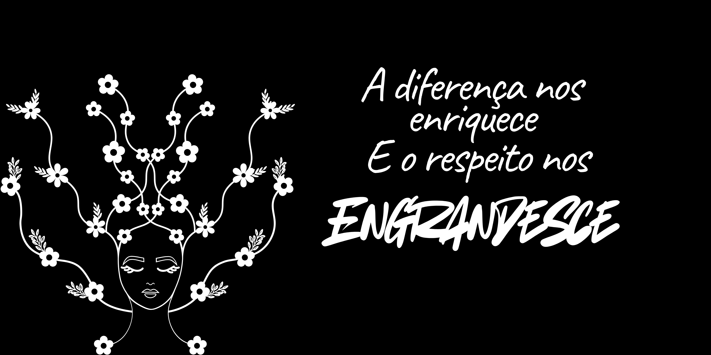

Setembros de Papel
Cores, empatia e conscientização em cada página.
O projeto Setembros de Papel nasceu com o propósito de transformar os meses de conscientização em experiências de sensibilidade, aprendizado e expressão. Em setembro, nossos alunos se envolveram com temas como o Setembro Amarelo (prevenção ao suicídio), Setembro Azul (visibilidade surda) e Setembro Roxo (empatia e inclusão).
Cada cor representou uma emoção, um olhar e uma história compartilhada — mostrando que quando a arte e a educação se unem, o papel floresce em significado.

Galeria do Projeto
Alguns registros das atividades, exposições e produções realizadas durante o projeto.
Um setembro para florescer
“Setembros de Papel” é mais que um projeto — é um lembrete de que cada voz, gesto e cor têm o poder de transformar. Seguimos semeando empatia e esperança, uma história de cada vez.